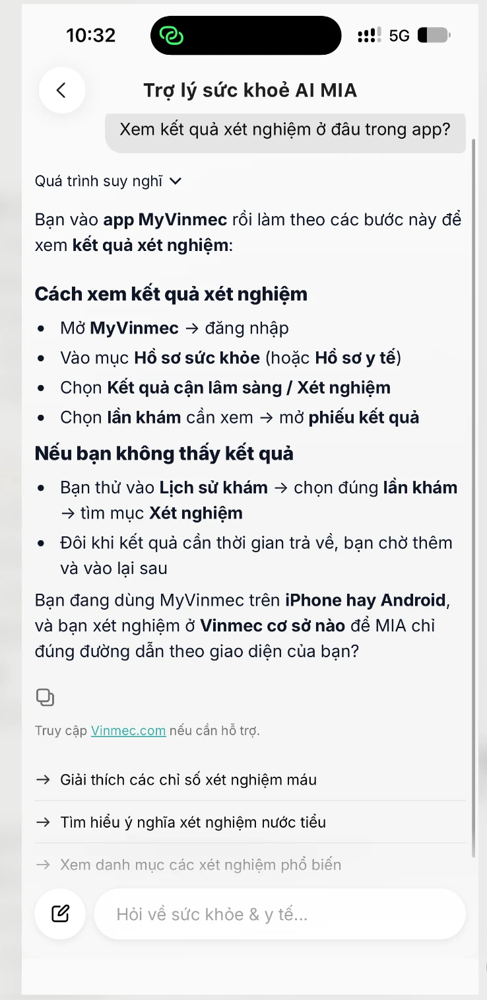
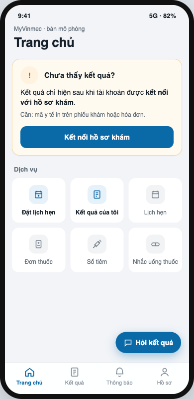
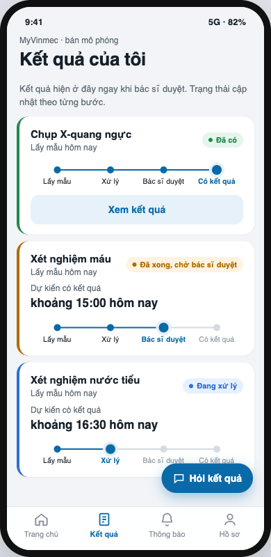

Lấy: cho thấy trạng thái, tránh ẩn toàn bộ kết quả.
Cẩn thận: lo lắng khi kết quả bất thường; không suy quy định Mỹ sang Việt Nam.
Bài tập ứng tuyển · Nghiên cứu trải nghiệm
Một lần đi khám.
Nhận được kết quả?
Khoảnh khắc tìm và xem kết quả trên MyVinmec.
Một hướng thử: “Kết quả của tôi”
và trợ lý chỉ đường theo trạng thái tài khoản.
Bằng chứng ban đầu.
Chưa kiểm chứng lợi ích với người dùng.
Sau buổi khám, còn một bước.
Tìm và xem được kết quả xét nghiệm,
chụp chiếu của mình.
Vì sao chọn khoảnh khắc này?
Theo tài liệu của bài tập, từ 5/2024 phần lớn ca chụp chiếu tại Vinmec không còn in phim. App trở thành lối nhận kết quả quan trọng.
Khi không tới được kết quả: gọi tổng đài, quay lại viện hoặc bỏ cuộc.
01
phỏng vấn P3
Trải nghiệm ở viện công
06
nhiệm vụ dùng thử app
22 ảnh đã che thông tin
21
review trên store
Nguồn phụ, không thay phỏng vấn
Chưa đủ 3 buổi phỏng vấn theo đề. Chỉ có P3; không có P1, P2. Ba nguồn được giữ riêng, không cộng thành số người tham gia.
02 / 10
Dùng thử T6 · ảnh đã che thông tin
Chỉ đường tới
mục không thấy.
- Dùng thử · T3, T6
- Không tìm thấy mục “kết quả” sau khi xem Trang chủ, 15 ô dịch vụ và Hồ sơ. Chatbot vẫn chỉ tới hai mục không thấy trên tài khoản thử.
- Review store
- Phản ánh không tìm ra hồ sơ, OTP lỗi, phải chờ bác sĩ đưa kết quả lên.
- P3 · viện công
- Bác sĩ giải thích đủ hiểu khi có kết quả. Chi phí trải nghiệm nằm ở thời gian chờ tại viện.
Có thể các mục chỉ hiện sau khi liên kết hồ sơ, nhưng chatbot không nói điều kiện đó. P3 không đồng ý trích lời; nội dung trên là tóm tắt.
Vướng ở bước tới được kết quả.
Chưa có đủ bằng chứng để chọn bài toán “hiểu chỉ số”.
InsightĐộ mạnh
I1 Vướng ở chỗ tới được kết quả, chưa phải ở chỗ hiểu kết quả.
Trung bìnhBa nguồn cùng chiều, mỗi nguồn mỏng
I2 Không rõ trạng thái, điều kiện để xem; thông báo kết quả có thể lẫn quảng cáo.
Trung bình
I3 Trợ lý chỉ đường như thể mọi tài khoản cùng trạng thái.
YếuMột câu hỏi, một tài khoản
I4 Tạo hồ sơ mới xong thì mất lối kết nối hồ sơ cũ.
YếuChưa kiểm với người đã khám
I5 Chờ tại viện tốn nửa ngày, nhưng nằm ngoài app.
Yếu với app
Tất cả là giả thuyết có bằng chứng ban đầu, chưa được kiểm chứng.
04 / 10Điểm đứt: tới được kết quả.
Hai luồng riêng: viện công qua lời kể P3, và qua app từ dùng thử cùng review.
Sau xét nghiệm / chụp chiếu →
| Nguồn | Chờ kết quả | Biết là đã có | Tới được kết quả | Đọc, hiểu |
|---|---|---|---|---|
| Viện côngP3 | Đ1 · Chờ 2–3 giờ Ngồi trước phòng khám, đợi gọi. | Bác sĩ gọi vào; kết quả chuyển thẳng tới bác sĩ. | Không có bước tự lấy kết quả; bác sĩ nhận trực tiếp. | Bác sĩ giải thích, đánh dấu chỉ số cần chú ý. P3 thấy đủ hiểu. |
| Qua appDùng thử + review | Chưa có lời kể về đoạn chờ ở nhà. | Đ2 · Dễ bỏ lỡ 5 thông báo đầu là quảng cáo; review muốn nhận kết quả sớm. | Đ3 · Điểm chọn Không thấy mục kết quả; chatbot chỉ sai. Review phản ánh OTP lỗi. | Chưa quan sát được. Người dùng thử chưa từng khám tại Vinmec. |
→ Bước tiếp theo: P3 nhận đơn và thuốc; qua app chưa quan sát được, review kể phải gọi tổng đài khi kết nối lỗi.
Cảm xúc trong sơ đồ gốc là suy luận từ lời kể và thao tác, không phải thang đo P3 tự báo cáo. Ô xám là chưa có dữ liệu trực tiếp.
Xem sơ đồ gốc 6 bước ↗Need statement · Biodesign
Một nhu cầu, chưa chọn giải pháp.
Cách để giảm số lần phải gọi tổng đài, quay lại viện hoặc bỏ cuộc trước khi xem được kết quả, cho người bệnh ngoại trú (và người nhà xem hộ) đã xét nghiệm hoặc chụp chiếu mà kết quả chỉ trả qua app, khi họ chưa biết kết quả đang ở trạng thái nào và cần làm gì để xem được.
Outcome có thể đo
Số lần phải dùng cách xoay xở ngoài app.
Không chứa giải pháp
Không đặt AI hay chatbot vào nhu cầu.
Giả định cần kiểm
Chưa phỏng vấn người nhà xem hộ.
Đã bỏ hướng “không hiểu kết quả” vì chưa có bằng chứng; “chờ tại viện” nằm ở vận hành, mới có một nguồn.
06 / 10Tham khảo cách làm, giữ bối cảnh.
Lấy: mục kết quả rõ tên, giải thích vì sao chưa thấy, xem hộ có ủy quyền.
Cẩn thận: hạ tầng khác; tài liệu chính sách không chứng minh hiệu quả.
Lấy: con người duyệt nội dung có giá phải trả cao khi sai.
Cẩn thận: mẫu nhỏ, tự báo cáo; prototype này không giải thích chỉ số.
Tổng hợp từ nguồn trong repo. Khác biệt pháp lý, dữ liệu và ngôn ngữ cần được đánh giá riêng.
07 / 10Thấy trạng thái.
Biết bước tiếp.
Giả thuyết: điều kiện xem rõ ràng và trợ lý chỉ đúng màn theo trạng thái có thể giúp người dùng tới kết quả mà không gọi tổng đài.
- “Kết quả của tôi”, thanh 4 bước và giờ dự kiến.
- 4 tình huống giả; thông báo kết quả tách ưu đãi.
- Trợ lý nhận trạng thái; máy chủ lọc nút tới màn không tồn tại.
Dữ liệu giả. Không nhập thông tin thật.


Chưa thử với người dùng. Chế độ AI chưa chạy vì chưa có API key; mới chạy luật cố định. Làm được chưa có nghĩa là giúp được.
08 / 10Rủi ro và thiết kế Human–AI
Not Yet.
Đủ để thử trong môi trường giả lập.
Chưa đủ để dùng trên app thật.
Ranh giới trong prototype
- Chỉ tìm kết quả, báo lại trạng thái. Không giải thích chỉ số hay chẩn đoán.
- Luật bắt từ khóa khẩn cấp trước model. Đây không phải bộ phân loại đã được y tế duyệt.
- Mọi màn có đường đi không cần trợ lý; luôn có lối sang tổng đài.
Ba điều còn chặn triển khai
- Chưa thử chế độ AI, chưa biết model có tuân thủ giới hạn.
- Từ điển khẩn cấp chưa được nhân viên y tế duyệt.
- Ủy quyền xem hộ và dữ liệu gửi nhà cung cấp model chưa được đánh giá pháp lý.
Bản thật cần đánh giá bảo vệ dữ liệu sức khỏe. 12 rủi ro: tách rõ đã có, mô phỏng và đề xuất ↗
09 / 10Bước tiếp theo: kiểm điều chưa biết.
Nghiên cứu tiếp
Thêm ≥2 phỏng vấn.
Thử với 2–3 người lạ.
Ưu tiên người xem kết quả qua app và người xem hộ bố mẹ. Quan sát họ tự làm, rồi sửa đúng một điều.
Còn chưa biết: tài khoản đã khám có gặp I4? Tài khoản đã kết nối có gặp I3? Prototype có giúp tới kết quả?
Coach nhóm K4
- Mời từ ngày đầu
- Mời gấp đôi số cần; ghi thật nếu vẫn thiếu.
- Hai điểm kiểm
- Đọc log vào thứ Ba–Tư; coach tự thử prototype như người lạ vào thứ Sáu.
- Giữ đường về bằng chứng
- Quan sát khác suy luận. Mỗi thay đổi phải dẫn về một điều đã thấy.
“Với 3 người thử, đã chứng minh chưa?” Chưa.
Xem repo và bằng chứng ↗